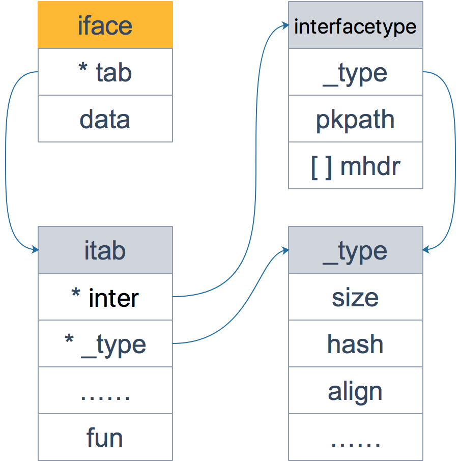
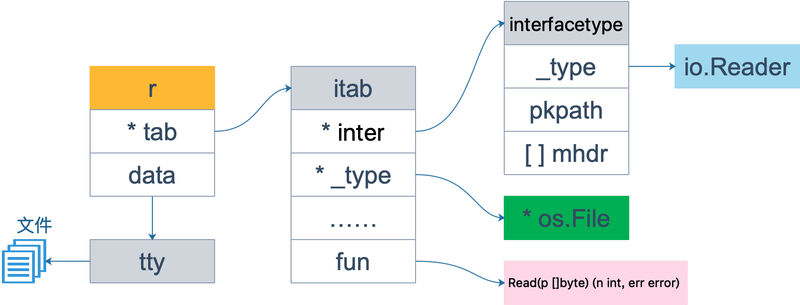
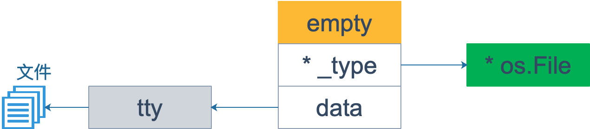
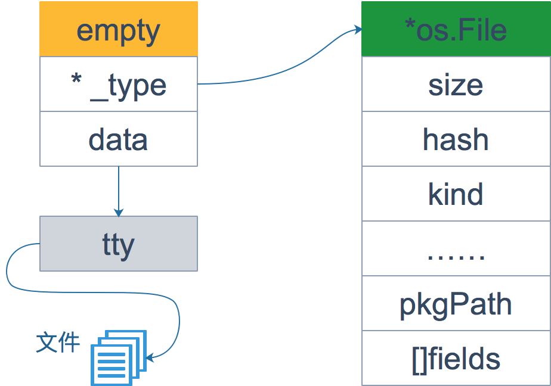
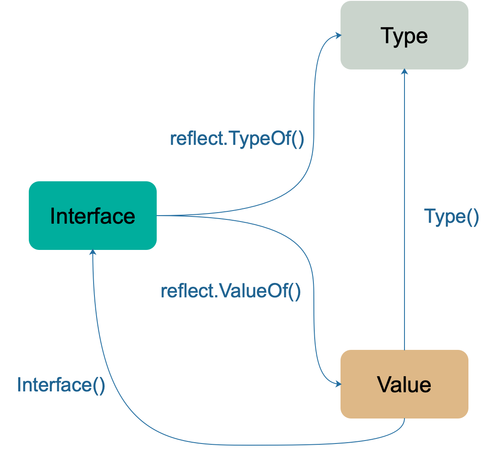
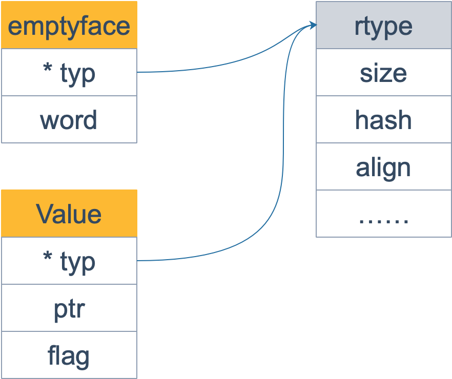

interface，它是 Go 语言实现抽象的一个非常强大的工具。当向接口变量赋予一个实体类型的时候，接口会存储实体的类型信息，反射就是通过接口的类型信息实现的，反射建立在类型的基础上。
Go 语言在 reflect 包里定义了各种类型，实现了反射的各种函数，通过它们可以在运行时检测类型的信息、改变类型的值。
types 和 interface
#
Go 语言中，每个变量都有一个静态类型，在编译阶段就确定了的，比如 int, float64, []int 等等。注意，这个类型是声明时候的类型，不是底层数据类型。
Go 官方博客里就举了一个例子：
1
2
3
4
|
type MyInt int
var i int
var j MyInt
|
尽管 i，j 的底层类型都是 int，但我们知道，他们是不同的静态类型，除非进行类型转换，否则，i 和 j 不能同时出现在等号两侧。j 的静态类型就是 MyInt。
反射主要与 interface{} 类型相关。关于 interface 的底层结构，可以参考前面有关 interface 章节的内容，这里复习一下。
1
2
3
4
5
6
7
8
9
10
11
12
13
14
15
|
type iface struct {
tab *itab
data unsafe.Pointer
}
type itab struct {
inter *interfacetype
_type *_type
link *itab
hash uint32
bad bool
inhash bool
unused [2]byte
fun [1]uintptr
}
|
其中 itab 由具体类型 _type 以及 interfacetype 组成。_type 表示具体类型，而 interfacetype 则表示具体类型实现的接口类型。

实际上，iface 描述的是非空接口，它包含方法；与之相对的是 eface，描述的是空接口，不包含任何方法，Go 语言里有的类型都 “实现了” 空接口。
1
2
3
4
|
type eface struct {
_type *_type
data unsafe.Pointer
}
|
相比 iface，eface 就比较简单了。只维护了一个 _type 字段，表示空接口所承载的具体的实体类型。data 描述了具体的值。

还是用 Go 官方关于反射的博客里的例子，当然，我会用图形来详细解释，结合两者来看会更清楚。顺便提一下，搞技术的不要害怕英文资料，要想成为技术专家，读英文原始资料是技术提高的一条必经之路。
先明确一点：接口变量可以存储任何实现了接口定义的所有方法的变量。
Go 语言中最常见的就是 Reader 和 Writer 接口：
1
2
3
4
5
6
7
|
type Reader interface {
Read(p []byte) (n int, err error)
}
type Writer interface {
Write(p []byte) (n int, err error)
}
|
接下来，就是接口之间的各种转换和赋值了：
1
2
3
4
5
6
|
var r io.Reader
tty, err := os.OpenFile("/Users/qcrao/Desktop/test", os.O_RDWR, 0)
if err != nil {
return nil, err
}
r = tty
|
首先声明 r 的类型是 io.Reader，注意，这是 r 的静态类型，此时它的动态类型为 nil，并且它的动态值也是 nil。
之后，r = tty 这一语句，将 r 的动态类型变成 *os.File，动态值则变成非空，表示打开的文件对象。这时，r 可以用<value, type>对来表示为： <tty, *os.File>。

注意看上图，此时虽然 fun 所指向的函数只有一个 Read 函数，其实 *os.File 还包含 Write 函数，也就是说 *os.File 其实还实现了 io.Writer 接口。因此下面的断言语句可以执行：
1
2
|
var w io.Writer
w = r.(io.Writer)
|
之所以用断言，而不能直接赋值，是因为 r 的静态类型是 io.Reader，并没有实现 io.Writer 接口。断言能否成功，看 r 的动态类型是否符合要求。
这样，w 也可以表示成 <tty, *os.File>，仅管它和 r 一样，但是 w 可调用的函数取决于它的静态类型 io.Writer，也就是说它只能有这样的调用形式： w.Write() 。w 的内存形式如下图：
和 r 相比，仅仅是 fun 对应的函数变了：Read -> Write。
最后，再来一个赋值：
1
2
|
var empty interface{}
empty = w
|
由于 empty 是一个空接口，因此所有的类型都实现了它，w 可以直接赋给它，不需要执行断言操作。

从上面的三张图可以看到，interface 包含三部分信息：_type 是类型信息，*data 指向实际类型的实际值，itab 包含实际类型的信息，包括大小、包路径，还包含绑定在类型上的各种方法（图上没有画出方法），补充一下关于 os.File 结构体的图：

这一节的最后，展示一个技巧：
先参考源码，分别定义一个“伪装”的 iface 和 eface 结构体。
1
2
3
4
5
6
7
8
9
10
11
12
13
14
15
16
17
|
type iface struct {
tab *itab
data unsafe.Pointer
}
type itab struct {
inter uintptr
_type uintptr
link uintptr
hash uint32
_ [4]byte
fun [1]uintptr
}
type eface struct {
_type uintptr
data unsafe.Pointer
}
|
接着，将接口变量占据的内存内容强制解释成上面定义的类型，再打印出来：
1
2
3
4
5
6
7
8
9
10
11
12
13
14
15
16
17
18
19
20
21
22
23
24
25
26
27
28
29
30
31
32
33
34
35
36
37
38
39
|
package main
import (
"os"
"fmt"
"io"
"unsafe"
)
func main() {
var r io.Reader
fmt.Printf("initial r: %T, %v\n", r, r)
tty, _ := os.OpenFile("/Users/qcrao/Desktop/test", os.O_RDWR, 0)
fmt.Printf("tty: %T, %v\n", tty, tty)
// 给 r 赋值
r = tty
fmt.Printf("r: %T, %v\n", r, r)
rIface := (*iface)(unsafe.Pointer(&r))
fmt.Printf("r: iface.tab._type = %#x, iface.data = %#x\n", rIface.tab._type, rIface.data)
// 给 w 赋值
var w io.Writer
w = r.(io.Writer)
fmt.Printf("w: %T, %v\n", w, w)
wIface := (*iface)(unsafe.Pointer(&w))
fmt.Printf("w: iface.tab._type = %#x, iface.data = %#x\n", wIface.tab._type, wIface.data)
// 给 empty 赋值
var empty interface{}
empty = w
fmt.Printf("empty: %T, %v\n", empty, empty)
emptyEface := (*eface)(unsafe.Pointer(&empty))
fmt.Printf("empty: eface._type = %#x, eface.data = %#x\n", emptyEface._type, emptyEface.data)
}
|
运行结果：
1
2
3
4
5
6
7
8
|
initial r: <nil>, <nil>
tty: *os.File, &{0xc4200820f0}
r: *os.File, &{0xc4200820f0}
r: iface.tab._type = 0x10bfcc0, iface.data = 0xc420080020
w: *os.File, &{0xc4200820f0}
w: iface.tab._type = 0x10bfcc0, iface.data = 0xc420080020
empty: *os.File, &{0xc4200820f0}
empty: eface._type = 0x10bfcc0, eface.data = 0xc420080020
|
r，w，empty 的动态类型和动态值都一样。不再详细解释了，结合前面的图可以看得非常清晰。
反射的基本函数
#
reflect 包里定义了一个接口和一个结构体，即 reflect.Type 和 reflect.Value，它们提供很多函数来获取存储在接口里的类型信息。
reflect.Type 主要提供关于类型相关的信息，所以它和 _type 关联比较紧密；reflect.Value 则结合 _type 和 data 两者，因此程序员可以获取甚至改变类型的值。
reflect 包中提供了两个基础的关于反射的函数来获取上述的接口和结构体：
1
2
|
func TypeOf(i interface{}) Type
func ValueOf(i interface{}) Value
|
TypeOf 函数用来提取一个接口中值的类型信息。由于它的输入参数是一个空的 interface{}，调用此函数时，实参会先被转化为 interface{}类型。这样，实参的类型信息、方法集、值信息都存储到 interface{} 变量里了。
看下源码：
1
2
3
4
|
func TypeOf(i interface{}) Type {
eface := *(*emptyInterface)(unsafe.Pointer(&i))
return toType(eface.typ)
}
|
这里的 emptyInterface 和上面提到的 eface 是一回事（字段名略有差异，字段是相同的），并且在不同的源码包：前者在 reflect 包，后者在 runtime 包。 eface.typ 就是动态类型。
1
2
3
4
|
type emptyInterface struct {
typ *rtype
word unsafe.Pointer
}
|
至于 toType 函数，只是做了一个类型转换：
1
2
3
4
5
6
|
func toType(t *rtype) Type {
if t == nil {
return nil
}
return t
}
|
注意，返回值 Type 实际上是一个接口，定义了很多方法，用来获取类型相关的各种信息，而 *rtype 实现了 Type 接口。
1
2
3
4
5
6
7
8
9
10
11
12
13
14
15
16
17
18
19
20
21
22
23
24
25
26
27
28
29
30
31
32
33
34
35
36
37
38
39
40
41
42
43
44
45
46
47
48
49
50
51
52
53
54
55
56
57
58
59
60
61
62
63
64
65
66
67
68
69
70
71
72
73
74
75
76
77
78
79
80
81
82
83
84
85
86
87
88
89
90
91
92
93
94
95
96
97
98
99
100
101
102
103
|
type Type interface {
// 所有的类型都可以调用下面这些函数
// 此类型的变量对齐后所占用的字节数
Align() int
// 如果是 struct 的字段，对齐后占用的字节数
FieldAlign() int
// 返回类型方法集里的第 `i` (传入的参数)个方法
Method(int) Method
// 通过名称获取方法
MethodByName(string) (Method, bool)
// 获取类型方法集里导出的方法个数
NumMethod() int
// 类型名称
Name() string
// 返回类型所在的路径，如：encoding/base64
PkgPath() string
// 返回类型的大小，和 unsafe.Sizeof 功能类似
Size() uintptr
// 返回类型的字符串表示形式
String() string
// 返回类型的类型值
Kind() Kind
// 类型是否实现了接口 u
Implements(u Type) bool
// 是否可以赋值给 u
AssignableTo(u Type) bool
// 是否可以类型转换成 u
ConvertibleTo(u Type) bool
// 类型是否可以比较
Comparable() bool
// 下面这些函数只有特定类型可以调用
// 如：Key, Elem 两个方法就只能是 Map 类型才能调用
// 类型所占据的位数
Bits() int
// 返回通道的方向，只能是 chan 类型调用
ChanDir() ChanDir
// 返回类型是否是可变参数，只能是 func 类型调用
// 比如 t 是类型 func(x int, y ... float64)
// 那么 t.IsVariadic() == true
IsVariadic() bool
// 返回内部子元素类型，只能由类型 Array, Chan, Map, Ptr, or Slice 调用
Elem() Type
// 返回结构体类型的第 i 个字段，只能是结构体类型调用
// 如果 i 超过了总字段数，就会 panic
Field(i int) StructField
// 返回嵌套的结构体的字段
FieldByIndex(index []int) StructField
// 通过字段名称获取字段
FieldByName(name string) (StructField, bool)
// FieldByNameFunc returns the struct field with a name
// 返回名称符合 func 函数的字段
FieldByNameFunc(match func(string) bool) (StructField, bool)
// 获取函数类型的第 i 个参数的类型
In(i int) Type
// 返回 map 的 key 类型，只能由类型 map 调用
Key() Type
// 返回 Array 的长度，只能由类型 Array 调用
Len() int
// 返回类型字段的数量，只能由类型 Struct 调用
NumField() int
// 返回函数类型的输入参数个数
NumIn() int
// 返回函数类型的返回值个数
NumOut() int
// 返回函数类型的第 i 个值的类型
Out(i int) Type
// 返回类型结构体的相同部分
common() *rtype
// 返回类型结构体的不同部分
uncommon() *uncommonType
}
|
可见 Type 定义了非常多的方法，通过它们可以获取类型的一切信息，大家一定要完整的过一遍上面所有的方法。
注意到 Type 方法集的倒数第二个方法 common
返回的 rtype类型，它和上一篇文章讲到的 _type 是一回事，而且源代码里也注释了：两边要保持同步：
1
|
// rtype must be kept in sync with ../runtime/type.go:/^type._type.
|
1
2
3
4
5
6
7
8
9
10
11
12
13
|
type rtype struct {
size uintptr
ptrdata uintptr
hash uint32
tflag tflag
align uint8
fieldAlign uint8
kind uint8
alg *typeAlg
gcdata *byte
str nameOff
ptrToThis typeOff
}
|
所有的类型都会包含 rtype 这个字段，表示各种类型的公共信息；另外，不同类型包含自己的一些独特的部分。
比如下面的 arrayType 和 chanType 都包含 rytpe，而前者还包含 slice，len 等和数组相关的信息；后者则包含 dir 表示通道方向的信息。
1
2
3
4
5
6
7
8
9
10
11
12
13
14
|
// arrayType represents a fixed array type.
type arrayType struct {
rtype `reflect:"array"`
elem *rtype // array element type
slice *rtype // slice type
len uintptr
}
// chanType represents a channel type.
type chanType struct {
rtype `reflect:"chan"`
elem *rtype // channel element type
dir uintptr // channel direction (ChanDir)
}
|
注意到，Type 接口实现了 String() 函数，满足 fmt.Stringer 接口，因此使用 fmt.Println 打印的时候，输出的是 String() 的结果。另外，fmt.Printf() 函数，如果使用 %T 来作为格式参数，输出的是 reflect.TypeOf 的结果，也就是动态类型。例如：
1
|
fmt.Printf("%T", 3) // int
|
讲完了 TypeOf 函数，再来看一下 ValueOf 函数。返回值 reflect.Value 表示 interface{} 里存储的实际变量，它能提供实际变量的各种信息。相关的方法常常是需要结合类型信息和值信息。例如，如果要提取一个结构体的字段信息，那就需要用到 _type (具体到这里是指 structType) 类型持有的关于结构体的字段信息、偏移信息，以及 *data 所指向的内容 —— 结构体的实际值。
源码如下：
1
2
3
4
5
6
7
8
9
10
11
12
13
14
15
16
17
18
19
20
21
22
23
24
|
func ValueOf(i interface{}) Value {
if i == nil {
return Value{}
}
// ……
return unpackEface(i)
}
// 分解 eface
func unpackEface(i interface{}) Value {
e := (*emptyInterface)(unsafe.Pointer(&i))
t := e.typ
if t == nil {
return Value{}
}
f := flag(t.Kind())
if ifaceIndir(t) {
f |= flagIndir
}
return Value{t, e.word, f}
}
|
从源码看，比较简单：将先将 i 转换成 *emptyInterface 类型， 再将它的 typ 字段和 word 字段以及一个标志位字段组装成一个 Value 结构体，而这就是 ValueOf 函数的返回值，它包含类型结构体指针、真实数据的地址、标志位。
Value 结构体定义了很多方法，通过这些方法可以直接操作 Value 字段 ptr 所指向的实际数据：
1
2
3
4
5
6
7
8
9
10
11
12
13
14
15
16
|
// 设置切片的 len 字段，如果类型不是切片，就会panic
func (v Value) SetLen(n int)
// 设置切片的 cap 字段
func (v Value) SetCap(n int)
// 设置字典的 kv
func (v Value) SetMapIndex(key, val Value)
// 返回切片、字符串、数组的索引 i 处的值
func (v Value) Index(i int) Value
// 根据名称获取结构体的内部字段值
func (v Value) FieldByName(name string) Value
// ……
|
Value 字段还有很多其他的方法。例如：
1
2
3
4
5
6
7
8
9
10
11
12
13
14
|
// 用来获取 int 类型的值
func (v Value) Int() int64
// 用来获取结构体字段（成员）数量
func (v Value) NumField() int
// 尝试向通道发送数据（不会阻塞）
func (v Value) TrySend(x reflect.Value) bool
// 通过参数列表 in 调用 v 值所代表的函数（或方法
func (v Value) Call(in []Value) (r []Value)
// 调用变参长度可变的函数
func (v Value) CallSlice(in []Value) []Value
|
不一一列举了，反正是非常多。可以去 src/reflect/value.go 去看看源码，搜索 func (v Value) 就能看到。
另外，通过 Type() 方法和 Interface() 方法可以打通 interface、Type、Value 三者。Type() 方法也可以返回变量的类型信息，与 reflect.TypeOf() 函数等价。Interface() 方法可以将 Value 还原成原来的 interface。

总结一下：TypeOf() 函数返回一个接口，这个接口定义了一系列方法，利用这些方法可以获取关于类型的所有信息； ValueOf() 函数返回一个结构体变量，包含类型信息以及实际值。
用一张图来串一下：

上图中，rtye 实现了 Type 接口，是所有类型的公共部分。emptyface 结构体和 eface 其实是一个东西，而 rtype 其实和 _type 是一个东西，只是一些字段稍微有点差别，比如 emptyface 的 word 字段和 eface 的 data 字段名称不同，但是数据型是一样的。
反射的三大定律
#
根据 Go 官方关于反射的博客，反射有三大定律：
- Reflection goes from interface value to reflection object.
- Reflection goes from reflection object to interface value.
- To modify a reflection object, the value must be settable.
第一条是最基本的：反射是一种检测存储在 interface 中的类型和值机制。这可以通过 TypeOf 函数和 ValueOf 函数得到。
第二条实际上和第一条是相反的机制，它将 ValueOf 的返回值通过 Interface() 函数反向转变成 interface 变量。
前两条就是说 接口型变量 和 反射类型对象 可以相互转化，反射类型对象实际上就是指的前面说的 reflect.Type 和 reflect.Value。
第三条不太好懂：如果需要操作一个反射变量，那么它必须是可设置的。反射变量可设置的本质是它存储了原变量本身，这样对反射变量的操作，就会反映到原变量本身；反之，如果反射变量不能代表原变量，那么操作了反射变量，不会对原变量产生任何影响，这会给使用者带来疑惑。所以第二种情况在语言层面是不被允许的。
举一个经典例子：
1
2
3
|
var x float64 = 3.4
v := reflect.ValueOf(x)
v.SetFloat(7.1) // Error: will panic.
|
执行上面的代码会产生 panic，原因是反射变量 v 不能代表 x 本身，为什么？因为调用 reflect.ValueOf(x) 这一行代码的时候，传入的参数在函数内部只是一个拷贝，是值传递，所以 v 代表的只是 x 的一个拷贝，因此对 v 进行操作是被禁止的。
可设置是反射变量 Value 的一个性质，但不是所有的 Value 都是可被设置的。
就像在一般的函数里那样，当我们想改变传入的变量时，使用指针就可以解决了。
1
2
3
4
|
var x float64 = 3.4
p := reflect.ValueOf(&x)
fmt.Println("type of p:", p.Type())
fmt.Println("settability of p:", p.CanSet())
|
输出是这样的：
1
2
|
type of p: *float64
settability of p: false
|
p 还不是代表 x，p.Elem() 才真正代表 x，这样就可以真正操作 x 了：
1
2
3
4
|
v := p.Elem()
v.SetFloat(7.1)
fmt.Println(v.Interface()) // 7.1
fmt.Println(x) // 7.1
|
关于第三条，记住一句话：如果想要操作原变量，反射变量 Value 必须要 hold 住原变量的地址才行。